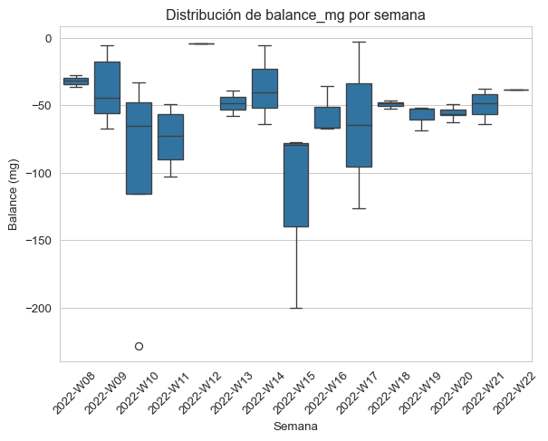

fecha receta litros_past est_past mg_past mp_past \
fecha_index
2022-02-23 23/02/2022 bajo mg 12380 10.760 2.58 3.550
2022-02-24 24/02/2022 mezcla 7440 13.290 5.15 4.090
2022-03-01 01/03/2022 vaca 15350 12.542 4.20 3.076
2022-03-01 01/03/2022 bajo mg 13080 11.090 2.59 3.600
2022-03-04 04/03/2022 mezcla 13420 14.220 5.45 4.310
kg_cuba est_cuba mg_cuba mp_cuba formato \
fecha_index
2022-02-23 12860.510 10.28 2.46 3.38 3 kg
2022-02-24 7704.462 12.80 4.90 3.89 barra
2022-03-01 15810.990 11.37 4.01 2.94 barra
2022-03-01 13867.370 10.41 2.47 3.43 barra
2022-03-04 14131.770 13.61 5.20 4.11 3 kg
est_salida_salmuera mg_salida_salmuera ph_salida_salmuera \
fecha_index
2022-02-23 50.85 20.34 5.44
2022-02-24 59.42 32.13 5.40
2022-03-01 55.94 29.50 5.41
2022-03-01 52.10 21.15 5.34
2022-03-04 52.65 28.80 5.44
peso_queso_total sal_queso
fecha_index
2022-02-23 1419.3 1.47
2022-02-24 1062.4 1.31
2022-03-01 1960.0 1.55
2022-03-01 1536.0 1.17
2022-03-04 2397.0 1.02 10 El balance de materia
En cualquier empresa quesera, con independencia de su tamaño, una de las primeras y más básicas cosas a realizar es un análisis del balance global de la elaboración quesera. Para un período determinado, que como primera aproximación, puede ser anual, se trata de conocer el balance entre la leche comprada y el queso producido, tanto en materia grasa como en proteína. Dado que toda la materia que no esté en el queso no puede ser vendida, no recuperaremos el coste de materia de las pérdidas (el suero de quesería ya no es un ingreso por venta; en la actualidad, en la mayor parte de los casos el suero es recogido a valor cero por las empresas que se encargan del secado de suero, con el valor del transporte como elemento de negociación).
En nuestro ejemplo, los datos quee vamos a utilizar están registrados en un fichero de datos en formato csv, el cual incluye la analíticas de la leche y el queso, así como alguna analítica adicional del proceso y que de momento no tiene interés para nosotros.
Analizaremos el conjunto de datos con pythony Excel, siguiendo nuestra línea de trabajo.
En una fábrica en la que se elabora más de un producto; el fichero de datos de fabricación debe parecerse a éste, en el que se detallan los volúmenes y analíticas tanto de la leche enviada a fabricación como de los quesos elaborados. Caracterizaremos nuestro queso mediante un análisis de extracto seco total (EST) y una grasa butirométrica (MG), en un punto determinado de nuestro proceso (por ejemplo, a la salida de la salmuera, después de escurrido) y mediante un muestreo repetible, de forma que nuestro análisis sea representativo. A partir de estos dos análisis, calculamos otros parámetros técnicos necesarios, tales como la materia grasa sobre el extracto seco total (G/ES), el extracto seco magro o desnatado (ESM) y la humedad del queso desnatado (HQD), valores que se calculan a partir de los primeros.
Descripción de las columnas (variables) del fichero de datos
En total, tenemos 45 entradas que corresponden a fabricaciones diarias, desde el 23/02/2022 hasta el 30/5/2022.
El fichero de datos incluye diferentes datos analíticos:
| Columna | Descripción |
|---|---|
| fecha | día de fabricación |
| receta | tipo de queso fabricado |
| litros_past | litros de leche enviados a pasteurización |
| kg_cuba | cantidad de leche recibida en cuba, en kilos |
| est_cuba | extracto seco de la leche en la cuba |
| mg_cuba | materia grasa de la leche en la cuba |
| mp_cuba | materia proteica de la leche en la cuba |
| lactosa_cuba | lactosa de la leche en la cuba |
| ph_final_moldeo_cuba | pH del queso al final del proceso de moldeo |
| formato | formato de moldeo |
| est_salida_salmuera | extracto seco total del queso después del salado |
| mg_salida_salmuera | materia grasa del queso después del salado |
| ph_salida_salmuera | pH del queso después del salado |
| peso_queso_total | peso del queso después del salado |
| sal_queso | porcentaje de sal analizada en el queso |
El queso se fabrica en varias recetas, y se envasa en diferentes formatos:
| Receta | Formatos | Comentario |
|---|---|---|
| i+D (ensayos) | 3 kg, 500 g, barra | |
| bajo mg | 3 kg, 500 g, barra | Queso con bajo contenido en MG |
| mezcla | 3 kg, 500 g, barra | |
| oveja | barra | |
| vaca | barra |
El fichero de datos contiene varios ensayos del departamento de i+D que se han mantenido para mostrar que a veces las cosas no salen bien a la primera…
Podemos calcular el balance gobal para el período de producción registrado, totalizando las cantidades corrspondientes:
Mostrar código
# Agrupar y sumar
resumen = df.groupby('receta')[['litros_past', 'peso_queso_total']].sum()
# Calcular la relación litros/kilo
resumen['litros_por_kilo'] = resumen['litros_past']/ resumen['peso_queso_total']
# Estimación del balance global
resumen['balance_kilos'] = resumen['peso_queso_total']-(resumen['litros_past']*1.030)
# Estimación del % de suero producido
resumen['suero_estimado_%'] = (resumen['balance_kilos']/1.020)/resumen['litros_past']*100
# Mostrar la tabla resultante
print(resumen) litros_past peso_queso_total litros_por_kilo balance_kilos \
receta
bajo mg 133820 15005.8 8.917885 -122828.80
i+D 59600 6763.0 8.812657 -54625.00
mezcla 135300 21628.7 6.255577 -117730.30
oveja 117970 21614.0 5.458036 -99895.10
vaca 129333 15814.0 8.178386 -117398.99
suero_estimado_%
receta
bajo mg -89.986842
i+D -89.855573
mezcla -85.308103
oveja -83.018032
vaca -88.992793 Dado que nuestros valores analíticos están expresados en porcentaje en peso, calculamos las cantidades de materia como se indica a continuación:
### 1. Cálculos de Entradas
df['est_kg_cuba'] = df['kg_cuba'] * df['est_cuba'] / 100
df['mg_kg_cuba'] = df['kg_cuba'] * df['mg_cuba'] / 100
df['mp_kg_cuba'] = df['kg_cuba'] * df['mp_cuba'] / 100
df['esm_kg_cuba'] = df['est_kg_cuba'] - df['mg_kg_cuba']
### 2. Cálculos de Salidas
df['est_kg_queso'] = df['peso_queso_total'] * df['est_salida_salmuera'] / 100
df['mg_kg_queso'] = df['peso_queso_total'] * df['mg_salida_salmuera'] / 100
df['esm_kg_queso'] = df['est_kg_queso'] - df['mg_kg_queso']
df['sal_kg_queso'] = df['peso_queso_total'] * df['sal_queso']/100
### 3. Coeficientes de recuperación (expresado en porcentaje)
df['coef_recup_mg'] = df['mg_kg_queso']/df['mg_kg_cuba'] * 100
df['coef_recup_mp'] = df['esm_kg_queso']/df['mp_kg_cuba'] * 100 # atencion a la fórmula de cálculo, deberia ser mp_kg_queso
df['coef_recup_esm'] = df['esm_kg_queso']/df['esm_kg_cuba'] * 100
### 4. Consumos de materia por kilo de queso (expresado en gramos de materia por kilo de queso)
df['consumo_mg_kg'] = df['mg_kg_cuba'] / df['peso_queso_total'] * 1000
df['consumo_mp_kg'] = df['mp_kg_cuba'] / df['peso_queso_total'] * 1000
### 5. Balance de Materia (Salida - Entrada)
# La falta de producto queda como negativo al hacer Salida - Entrada
df['balance_est'] = df['est_kg_queso'] - df['est_kg_cuba']
df['balance_mg'] = df['mg_kg_queso'] - df['mg_kg_cuba']
df['balance_esm'] = df['esm_kg_queso'] - df['esm_kg_cuba'] - df['sal_kg_queso']Mostrar código
### 6. Preparación y Exportación del DataFrame de Resultados
# Columnas finales a incluir en el reporte
columnas_balance = [
'fecha', 'receta', 'formato',
'litros_past', 'peso_queso_total',
'est_kg_cuba', 'est_kg_queso',
'mg_kg_cuba', 'mg_kg_queso', 'mp_kg_cuba',
'esm_kg_cuba', 'esm_kg_queso',
'coef_recup_mg', 'coef_recup_mp', 'coef_recup_esm',
'consumo_mg_kg', 'consumo_mp_kg',
'balance_est', 'balance_mg', 'balance_esm'
]
# Crear un nuevo DataFrame con las columnas de interés
df_balance = df[columnas_balance].copy()
# Guardar el DataFrame con punto decimal y separador ';'
nombre_archivo_salida = 'datos/informe_balance_materia.csv'
df_balance.to_csv(
nombre_archivo_salida,
sep=';',
index=False,
decimal=','
)Ahora vamos a crear un nuevo csvcon el balance de materia semanal, aprovechando las funciones de pandaspara crear una columna de semana ISO.
Mostrar código
# 1. Crear la columna 'semana' usando el formato ISO (Lunes=Día 1)
# Usamos el índice del DataFrame (que debe ser DatetimeIndex)
df['semana_iso'] = df.index.strftime('%G-W%V')
print("✅ Columna 'semana_iso' creada con el estándar Lunes-Domingo.")✅ Columna 'semana_iso' creada con el estándar Lunes-Domingo.Mostrar código
# Columnas que queremos sumarizar (Balances + Entradas + Salidas)
columnas_a_sumarizar = [
# Entradas
'est_kg_cuba', 'mg_kg_cuba', 'esm_kg_cuba',
# Salidas
'est_kg_queso', 'mg_kg_queso', 'esm_kg_queso',
# Balances
'balance_est', 'balance_mg', 'balance_esm'
]
# 2. Agrupar por 'semana_iso' y 'receta' y calcular la SUMA de todas las columnas
df_balance_semanal_completo = df.groupby(['semana_iso', 'balance_mg'])[columnas_a_sumarizar].sum()
# Renombrar las columnas para indicar que son totales
df_balance_semanal_completo.columns = [f'total_{col}' for col in columnas_a_sumarizar]Mostrar código
# 1. Definir el nombre del archivo de salida
nombre_archivo_final = 'datos/reporte_balance_completo_semanal_iso.csv'
# 2. Exportar el DataFrame a CSV
df_balance_semanal_completo.to_csv(
nombre_archivo_final,
sep=';', # Usa punto y coma como separador de columnas
index=True, # Mantiene las columnas de agrupación ('semana_iso' y 'receta')
decimal=',' # Usa coma como separador decimal
)Mostrar código
df_sns = df_balance_semanal_completo.reset_index(drop=False) # False mantiene la columna index como columna normalMostrar código
sns.lineplot(x='semana_iso', y='balance_mg', data=df_sns)
# Opcional: mejorar la visualización
plt.title('Distribución de balance_mg por semana')
plt.xlabel('Semana')
plt.ylabel('Balance (mg)')
plt.xticks(rotation=45) # Si los nombres de semana son largos
plt.show()
Mostrar código
# Convertir semana_iso a números temporales
df_sns['semana_num'] = pd.factorize(df_sns['semana_iso'])[0]
# Dibujar la línea de tendencia con regplot
sns.regplot(
x='semana_num',
y='balance_mg',
data=df_sns,
scatter=True,
x_jitter=0.2, # añade jitter horizontal
y_jitter=0.2, # añade jitter vertical
ci=None,
line_kws={'color': 'red'},
)
# Reemplazar los ticks del eje X con las etiquetas originales
plt.xticks(
ticks=df_sns['semana_num'],
labels=df_sns['semana_iso'],
rotation=45
)
# Mejorar visualización
plt.title('Distribución de balance_mg con línea de tendencia')
plt.xlabel('Semana')
plt.ylabel('Balance (mg)')
plt.tight_layout()
plt.show()
Mostrar código
# Crear el boxplot
sns.boxplot(x='semana_iso', y='balance_mg', data=df_sns)
# Opcional: mejorar la visualización
plt.title('Distribución de balance_mg por semana')
plt.xlabel('Semana')
plt.ylabel('Balance (mg)')
plt.xticks(rotation=45) # Si los nombres de semana son largos
plt.show()